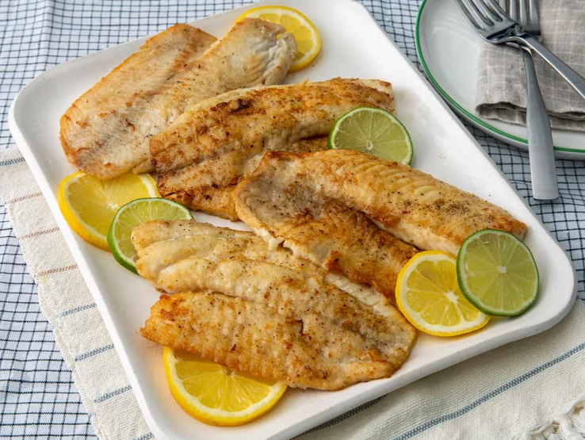

Learn how to cook tilapia with this easy, 15-minute recipe for pan-seared tilapia that's delicious and full of flavor. This simple method of cooking fish fillets is great for a weeknight meal. Serve with fresh veggies.
Step 1
Rinse tilapia fillets in cold water and pat dry with paper towels. Season both sides of each fillet with salt and pepper.
Step 2
Place flour in a shallow dish. Gently press each fillet into the flour to coat and shake off any excess.
Step 3
Heat olive oil in a large skillet over medium-high heat. Cook tilapia fillets in the hot oil, in batches if necessary, until fish flakes easily with a fork, about 4 minutes per side.
Step 4
Brush melted butter onto the tilapia fillets in the last minute before removing from the skillet.
Step 5
Drizzle fillets with lemon juice and garnish with parsley and thyme.